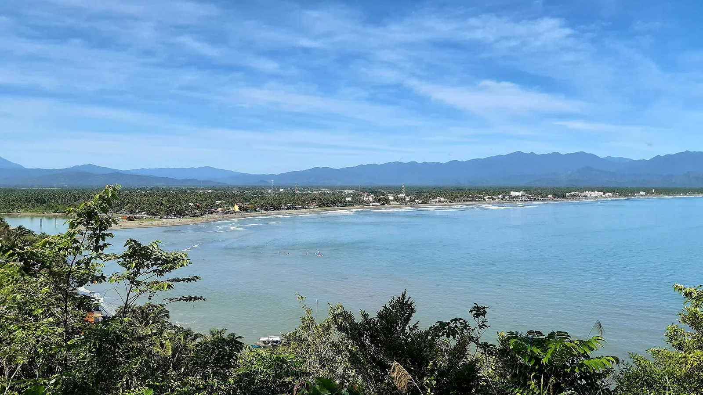

Sabang Beach — Baler
Aurora, Philippines · surf, bodyboard

Longue plage de sable sombre face au Pacifique, souvent présentée comme le berceau du surf philippin. Le beach break reste accessible aux débutants par petite houle, surtout de l’automne au printemps.
- Lieu
- Aurora, Philippines
- Niveau
- Débutant
- Activités
- surf, bodyboard
- Type d'eau
- Mer / océan
- Coordonnées
- 15.76, 121.57 (position approximative du secteur)
Dangers à connaître
- Shore break et courants par houle de typhon.
- Saison des typhons, surtout de juillet à octobre.
Le conseil d'Ocean Buddy
Prends un cours avec les surfeurs locaux et évite l’eau quand une houle de typhon arrive : les séries deviennent lourdes.
Ouvrir dans Ocean Buddy Télécharger sur l'App Store
Source : Fiche Ocean Buddy · septembre 2026 · à vérifier localement.